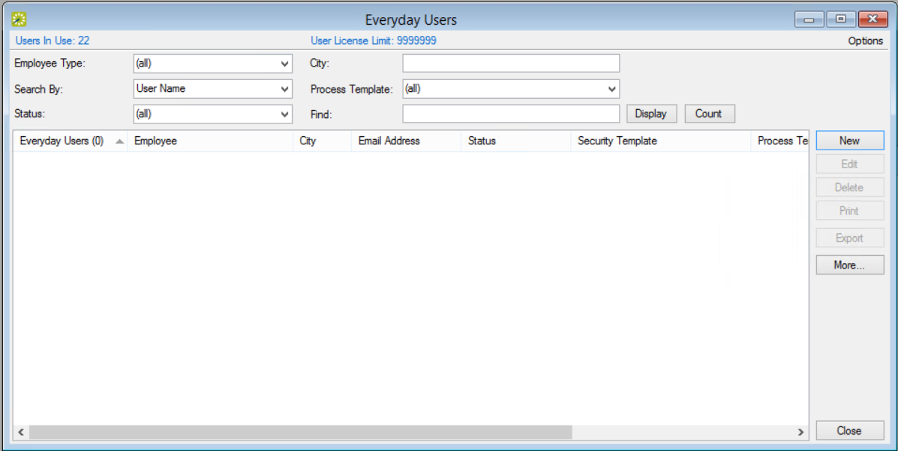
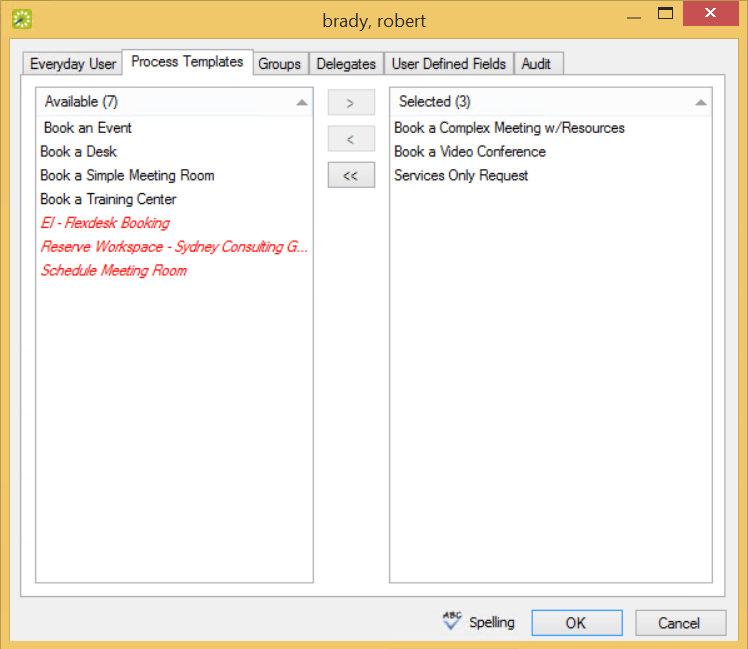

This section guides you in assigning Everyday User process templates to a single user. To assign these templates to multiple Everyday users in a single step, see Assign Web Templates to Multiple Everyday Users.
On the EMS menu bar, click Configuration > Everyday Applications > Everyday Users. The Everyday Users window opens.

You can further narrow your search results by:
In the Everyday User editing window, click the Process Templates tab.

Process Templates Tab